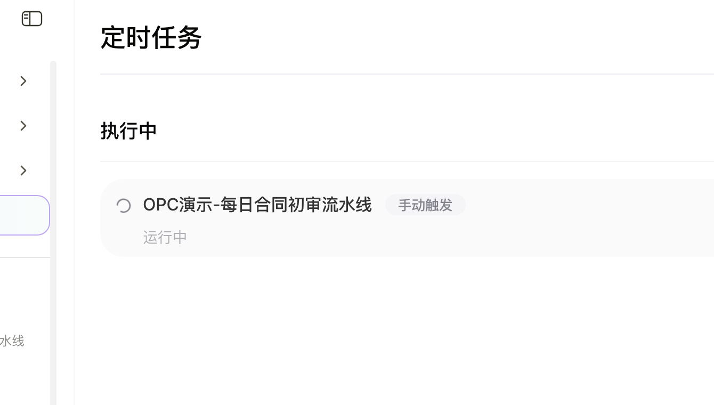

真实运行证据 · Desktop Task
07 / 10
VISUAL PROOF
任务建好了，也手动跑通过
桌面端有截图和录屏：能看到任务创建、菜单触发和运行中状态。


针对的是企业合同初审里那些天天重复、又容易出错的环节。
采购、技术服务、外包等合同从邮件、审批系统、共享盘进待审队列。
法务看条款，财务核金额和税率，业务盯付款节点。单份常常要 4 小时。
30% 税率、0.03% 付款比例、缺标的，签完才发现就晚了。
每周统计合规率、高频风险、重点供应商，整理一遍大约 2 小时。
因此，接下来看办公小浣熊如何用 AI 分担合同初审里的重复核对：常规项交给系统，人专注异常和最终把关。
量、慢、漏项、周报——用一条流水线逐步处理，工作日自动跑，周五再统一复盘。
周五汇总趋势和风险排行，出采购委员会周报；对方公司画像和法务红线写回知识库，下次直接复用。
承接上页流水线：小浣熊六项能力按工作日节奏嵌进初审，不是六个独立开关。
从定时拉单到周五归档，六项能力逐步接力；法务复核异常项，做最终判断。
先从合同里读出金额、税率、付款节点等关键信息，跑完 22 项固定规则，再让小浣熊整理成有出处的审核意见。
每条风险都能回到合同原文和检查结果 · AUDIT TRAIL

检查通过
未通过
需人工复核
桌面端有截图和录屏：能看到任务创建、菜单触发和运行中状态。
下面数字要么有截图和样本支撑，要么写明了估算口径。
材料能串起来：建任务 → 跑任务 → 看结果 → 做周报。
确认每天九点的初审任务已经建好。
确认任务能手动触发，界面会出现运行中状态。
确认 22 项检查能抓到具体风险，不是空跑。
确认结果能沉淀，也能整理成给管理层的周报。
采购合同每天进待审队列，法务和财务得快速判断能不能签。
定时拉取、查风险、读知识库、跑检查、出报告、写周报，步骤都接上了。
单份初审约 4 小时压到 3 分钟；周报整理从约 2 小时压到约 10 分钟。
网页端「查对方公司」目前保留了无联网工具时的降级截图，没有包装成已完成工商查询。